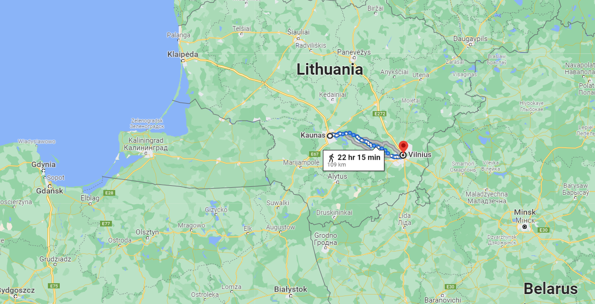
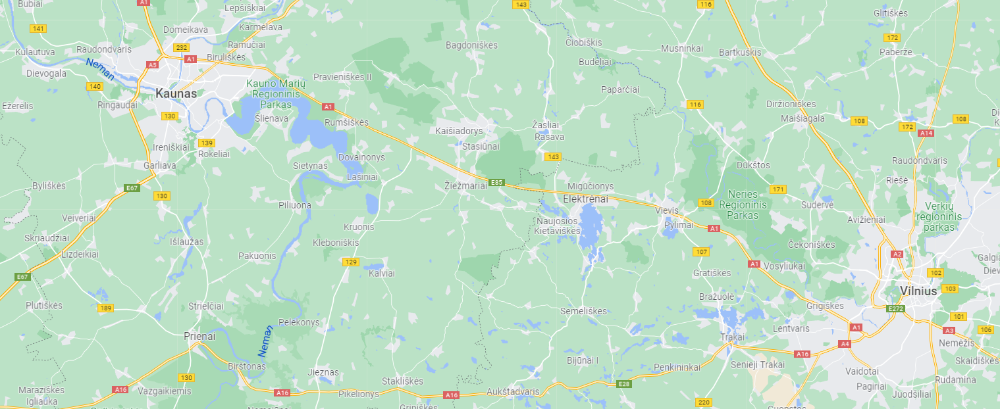
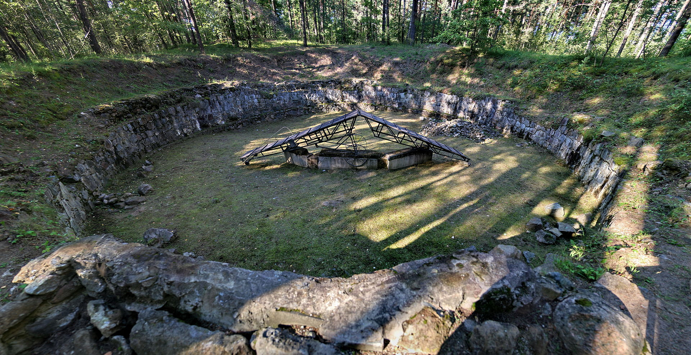
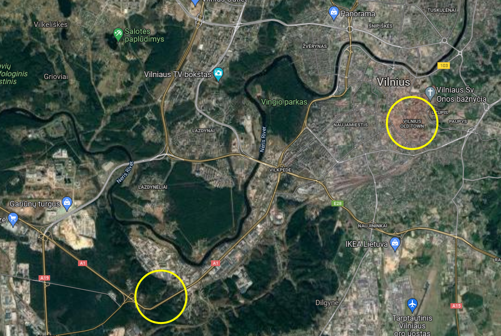
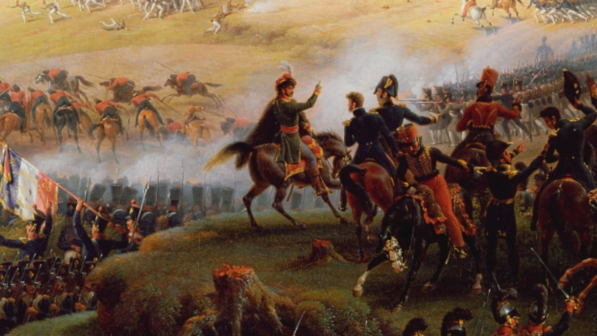
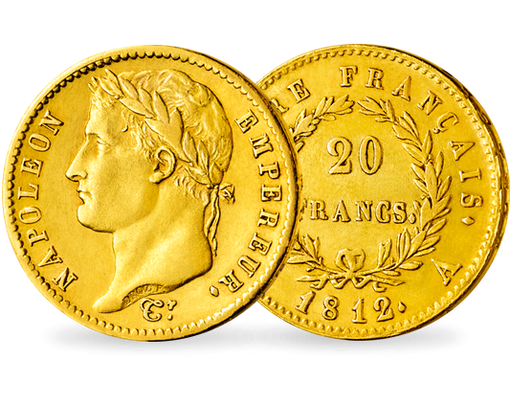
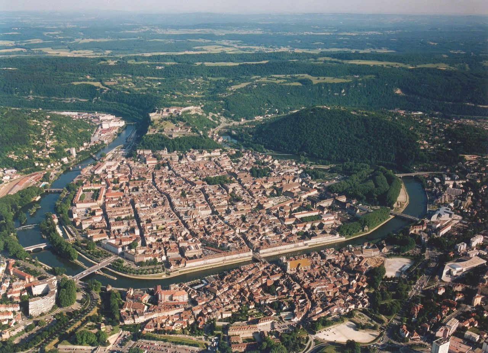

뮈라, 모래, 그리고 금화 - 빌나에서의 후퇴
게시: 2021-12-13T06:30:06+09:00
모든 군사 작전 중에서 가장 난이도가 높은 것이 후퇴입니다. 빵집 솜씨는 바게뜨를, 중국집 솜씨는 짜장면을 맛보면 알 수 있듯이, 지휘관의 역량은 후퇴 작전을 시켜보면 금방 알 수 있습니다. 나폴레옹은 모스크바에서든 스몰렌스크에서든 철수할 때마다 어느 부대가 앞장 서서 후퇴를 시작하고, 첫 부대가 다 떠난 뒤 간격을 얼마나 두고 두번 째 부대가 후퇴를 시작하는지 등등에 대해 꼼꼼한 명령서를 베르티에를 통해 발부했습니다. 그러나 남아대장부 뮈라는 달랐습니다. 그는 베르티에 따위는 찾지도 않고 그냥 '전군, 코브노로 후퇴'라는 짧고 간결한 명령만 날린 뒤, 병사들에게 모범을 보이기 위해 지체하지 않고 본인이 직접 앞장 서서 후퇴에 나섰습니다. 덕분에 빌나에서 철수한다는 명령은 매우 아마추어스럽게 전달되었습니다. 가뜩이나 사정이 허락하는 대로 여기저기 아무데나 숙소를 정하고 흩어진 채 쉬고 있던 그랑다르메에게는 이 명령 자체가 굉장한 혼란을 불러 일으켰습니다. 어떤 사람들은 정말 그런 명령이 내려졌다는 것을 믿지 않았고, 어떤 사람들에게는 아예 명령이 전달되지 않았습니다. 어떤 경우든, 그랑다르메는 체계적인 후퇴를 하기 위한 준비, 즉 식량 구매나 마차 정비 등이 전혀 되어있지 않았습니다.

(코브노, 즉 카우나스는 빌나 서쪽으로 약 100km 떨어진 마을이었습니다. 3일만 열심히 걸으면 되는 거리였습니다.)

(그런데 뮈라는 왜 코브노로 후퇴하라고 했을까요? 위 지도 왼쪽 Kaunas라는 글자 왼쪽에 파란 색 글자로 쓰인 Neman이라는 강 이름 표시가 보이시는지요? 바로 여기가 폴란드와 러시아의 자연 국경선인 네만 강에 접한 마을이기 때문입니다.) 혼란을 더욱 가중시킨 것은 지형이었습니다. 빌나는 중세 시절부터 내려오는 유서 깊은 도시여서 좁은 골목이 뒤엉킨 곳이 많았는데, 특히 도시 상당 부분이 경사진 곳에 위치해 있었기 때문에 눈이 내리고 얼음으로 뒤덮힌 좁은 골목은 거리로 몰려나온 병사들과 말과 마차들이 미끄러지고 서로 부딪히기 딱 좋은 곳이었습니다. 많은 마차의 바퀴통이 깨지고 말 다리가 부러졌으며 병사들도 넘어졌습니다. 그러나 가장 큰 난관은 빌나 서쪽 약 2km 지점의 포나리(Paneriai, 폴란드어로는 Ponary) 마을 근처의 고갯길이었습니다.

(포나리는 제2차 세계대전에서 나찌 독일이 많은 유태인을 학살한 곳이기도 합니다. 위 사진은 거기서 발견된 증거 인멸용 사체 소각장입니다.)
포나리는 리투아니아어로 Paneriai, 글자 그대로 풀이하면 네리스(Neris) 강 근처라는 뜻입니다. 빌나에서 코브노, 즉 카우나스로 이어지는 길은 이 포나리 마을 근처에서 꽤 긴 오르막을 형성했습니다. 겨울철이면 눈과 얼음으로 미끄러워지는 오르막길은 사람과 말, 마차 모두에게 큰 난관이 되었습니다. 우리나라에서도 겨울철이면 행인들을 위하여 그런 경사로에는 흔히 동네 이장님 등이 사람들과 함께 연탄재라도 잘게 부수어 뿌려두곤 했지요. 포나리 고갯길도 정상적인 경우에는 겨울마다 빌나의 관원들이 농노들을 동원하여 모래를 뿌리곤 했습니다. 그러나 빌나 주지사인 호겐도르프는 네덜란드 출신으로서, 그런 상황은 전혀 알지 못했고 당연히 아무런 준비가 되어 있지 않았습니다. 뮈라의 후퇴 명령을 받고 가장 먼저 후퇴를 시작한 그랑다르메 부대들은 이 포나리 고갯길에서 오도가도 못하고 극심한 정체 현상을 빚기 시작했습니다.

(지도 오른쪽에 그려진 노란색 동그라미가 빌나 구도심입니다. 빌나를 관통해서 흐르는 강이 네리스 강인데, 당시 그랑다르메는 네리스 강을 건너지는 않았으니까, 아마 그랑다르메가 기어오르는데 애를 먹었던 고갯길은 아마 지도 왼쪽 아래의 노란색 동그라미 부분부터 시작되는 것이 아닐까 합니다.) 이때 상황을 생생하고 목격한 사람 중에는 장 노엘(Jean Noel)이라는 포병 소령이 있었습니다. 12월 9일 오후 늦게, 이 양반은 루아송(Loison) 사단이 이미 대부분 얼어죽었다는 것은 전혀 모른 채, 보충용 대포들을 빌나에 주둔한 루아송 사단에게 전달하는 임무를 띠고 2개 포대 총 16문의 대포를 끌고 독일에서 출발하여 막 포나리 고갯길 정상에 다다른 상태였습니다. 그의 눈 앞에 펼쳐진 것은 러시아 저 깊숙한 곳 어딘가의 겨울 숙영지에서 쉬고 있어야 할 그랑다르메가 미끄러운 고갯길을 자빠지며 굼벵이처럼 기어오는 처참한 장면이었습니다. 얼떨떨했던 그와 그의 부하들은 이 불쌍한 병사들과 그 마차들이 고갯길을 기어오르도록 도와주며 하룻밤을 보냈습니다. 다음날 아침, 마차 1대가 고갯길을 올라와 노엘 소령의 대포들 옆에 섰습니다. 그 마차의 창문이 열리더니 웬 곱슬머리 남자가 몸을 내밀고는 "자넨 누구고 여기서 뭘 하는가?"라고 물었습니다. 놀랍게도 나폴리 왕 뮈라였습니다. 뮈라는 노엘 소령의 반짝거리는 새 대포들과 잘 먹어서 아직 튼튼해 보이는 새 말들을 보고 호기심이 동했던 것입니다. 직접 만나본 인물 중 가장 높은 신분의 대인물을 만난 노엘 소령은 바짝 얼어 자신의 임무를 설명한 뒤, 명령을 내려달라고 씩씩하게 말했습니다. 그러자 위풍당당한 나폴리 왕은 이렇게 대꾸하고는 창문을 닫고 사라졌습니다. "Major, nous sommes foutus. Montez à cheval et courez." (소령, 우린 ㅈ됐어. 말에 올라타고 도망치라구.)

(르죈(Lejeune)이 그린 '보로디노 전투'의 한복판에 그려진 뮈라의 모습입니다. 흰 깃털을 꽂은 화려한 모자를 쓴 나폴리 왕의 위풍당당한 모습은 어디서나 빛납니다.) 결국 베레지나의 위태로운 부교와 그 뒤를 이은 강추위의 엄습을 이겨내고 끌고 왔던 소중한 대포들 대부분은 이 고갯길에서 어처구니 없이 버려져야 했습니다. 몇몇 헤센(Hessen) 부대들은 초인적인 노력으로 대포들을 끌고 끝내 고개를 넘기도 했습니다만, 바이에른 출신의 폰 그라벤로이트(von Grawenreuth) 대위는 여태까지 끌고 왔던 그의 소중한 마지막 대포를 여기서 버려야 했습니다. 그는 명중률이 너무 좋아서 그가 애정을 가지고 마르스(Mars)라고 별도로 이름도 붙여주었던 이 대포를 포나리 고개 기슭에 버리면서 눈물을 펑펑 쏟았다고 합니다. 페뤼즈(Peyrusse) 남작이 빌나까지 기적적으로 끌고 왔던 그랑다르메의 금고도 여기서 끝장이 났습니다. 무거운 나폴레옹 금화(Napoléon d'or)로 가득 채워진 야전 금고 마차는 너무 무거웠던 것입니다. 결국 대부분의 마차들은 버려야 했고, 많은 금화를 자루에 담아 말 등에 싣고 고개를 넘었습니다. 페뤼즈 남작은 돈 문제에 있어서는 정말 성실한 남자여서, 빈 마차 1대는 온갖 애를 써서 고개를 넘게 한 뒤, 고개 너머에서 다시 금화 자루를 마차에 옮겨 싣는 방법으로 최소한 1대의 금고 마차는 온전히 건져내었고, 결국 그 1대 만큼은 네만 강을 건너 단치히까지 끌고 갔다고 합니다. 여기서 버려진 금고 마차의 금화들은 어떻게 되었을까요? 베시에르 원수는 뮈라로부터 도망치라는 명령을 듣고도 머뭇거리고 있던 노엘 소령에게 '저 금화 자루들을 소령의 마차들에게 최대한 많이 옮겨 싣게'라고 명령했습니다. 그러나 그 때문에 노엘 소령은 금화는 물론 금화를 실었던 마차들까지 통째로 도난당하는 봉변을 당해야 했습니다. 그러고도 많이 남아 있던 야전 금고 마차들은 마차 외부에 적힌 '황실 재무부'(Tresor Imperial)이라는 글자를 읽은 병사들의 손에 당연히 약탈 당했습니다. 그야말로 먼저 보는 사람이 임자였습니다. 병사들끼리도 싸웠고, 장교들과 병사들도 주먹다짐을 했으며, 민간인들도 이 아귀다툼에 끼어들었습니다. 덕분에 이 금고 마차들 주변에는 은화와 은촛대 은접시 등의 귀중품이 잔뜩 버려졌습니다. 사람들이 나폴레옹 금화를 담아가느라 기존의 귀중품들을 마구 버렸던 것입니다. 그러나 그런 와중에도 정직한 사람들은 있기 마련이라서, 바덴 및 뷔르템부르크 출신의 몇몇 독일 장교들은 그들의 썰매에 40만 프랑에 달하는 금화들을 싣고 가서, 2주 후 쾨니히스베르크의 재무담당관에게 그 금화들을 모조리 전달했다고 합니다. 제8 엽기병(Chasseur a Cheval) 연대 소속의 줄리앙 콩브(Julien Combe) 중위에 따르면, 그의 엽기병 중 하나가 이때 2만 프랑(현재 가치로 대략 4.5억원)의 금화가 든 자루 하나를 손에 넣었는데, 그 엽기병은 결국 그 돈으로 고향 브장숑(Besançon)에서 든든하게 기반을 잡고 결혼도 했다고 합니다. 그러나 모든 이들이 그런 해피엔딩을 맞은 것은 아니었습니다. 곧 코삭들이 나타나 금화를 노리고 낙오병들을 무자비하게 사냥했기 때문입니다. 덕분에 금화를 가졌든 가지지 않았든 그 뒤에 잡힌 포로들은 금화를 찾는 코삭들에 의해 더욱 가혹하게 두들겨 맞고 벌거벗겨져야 했습니다. 생각해보니 그런 수색은 어차피 금화 사건 이전에도 언제나 일어났던 일이었네요.

(나폴레옹 금화는 10, 20, 40프랑 짜리로 주조되었는데, 이 사진 속 물건은 40프랑 짜리입니다. 직경 26 mm, 무게는 12.9 g입니다. 그러니까 이런 40프랑 짜리 나폴레옹 금화로 2만 프랑이라면 500개이고, 그 2만 프랑짜리 금화 자루의 무게는 6.45kg입니다. 머스켓 소총 한 자루보다 조금 더 무거운 정도이니, 충분히 감당할 수 있는 정도였겠네요. 현재 저 금화는 골동품 가치까지 인정받아 하나에 1499유로, 즉 200만원 정도입니다. 실제 금의 가치로만 따지면 90만원 정도네요.)

(브쟝송은 프랑스 동부 부르고뉴 지방의 도시입니다.) 고갯길 기슭에 버려진 채 코삭들에 의해 발견된 것은 빈 금고 마차 뿐만이 아니었습니다. 어차피 나폴레옹도 그 후임자인 뮈라도 없는 마당에, 부상병들을 실은 많은 마차들도 이젠 조금의 거리낌도 없이 그냥 버려졌습니다. 이들은 코삭들에 의해 대부분 그 자리에서 살해되었고, 일부는 빌나로 다시 끌려간 뒤 거기서 더 고초를 겪다 죽었습니다. 호겐도르프가 이 포나리 고개에 모래만 좀 뿌려 놓았다면 수십 문의 대포와 엄청난 금액의 금화, 그리고 많은 부상병들이 목숨을 건질 수 있었습니다. 빌나에는 부상 때문에, 혹은 너무 지쳐서, 혹은 후퇴 명령이 떨어졌다는 것을 아예 몰라서 그냥 머물고 있던 낙오병들도 많았습니다. 부대 단위의 마지막 무리가 빌나를 떠나자마자 기다렸다는 듯이 코삭들이 쏟아져 들어와 낙오병들을 수색했습니다. 이들은 수도원은 물론 중산층 민간인 가옥에도 마구 들어와 낙오병들을 끌어냈고 길거리에서는 비참하게 끌려나와 두들겨 맞거나 살해되는 그랑다르메 장교들과 병사들의 비명소리가 끊이지 않았습니다. 폴란드계 주민들은 비교적 수동적이었지만, 비폴란드계 주민들은 자신들이 친프랑스파가 아니라는 것을 입증하려고 매우 적극적으로 그런 인간 사냥에 협조했습니다. 그들은 바로 어젯밤 친절히 유료 혹은 무료로 방을 내주었던 손님들을 손수 질질 끌어내 코삭들에게 넘기거나 직접 두들겨 패서 죽이기도 했습니다. 어떤 여성은 자기 집에 묵었던 낙오된 환자를 끌어내어 입에 오물을 쑤셔 박으며 '이 양반이 이젠 빵을 잡수시네'라며 비웃었다고 합니다. 이런 학대와 살해는 챠플리츠(Czaplic) 장군이 이끄는 러시아 정규균 선봉대가 빌나에 입성한 뒤에도 전혀 나아지지 않았습니다. 맞아죽는 것은 면했던 많은 포로들이 알몸으로 길거리에서 그대로 얼어죽거나 굶어죽었습니다. 물론 코브노로 향했던 그랑다르메 병사들의 고초도 끝난 것과는 거리가 멀었습니다.
Source : 1812 Napoleon's Fatal March on Moscow by Adam Zamoyski
https://en.wikipedia.org/wiki/Kaunas https://en.wikipedia.org/wiki/Auk%C5%A1tieji_Paneriai https://en.wikipedia.org/wiki/Besan%C3%A7on https://www.stefm.fr/20frc-napoleon